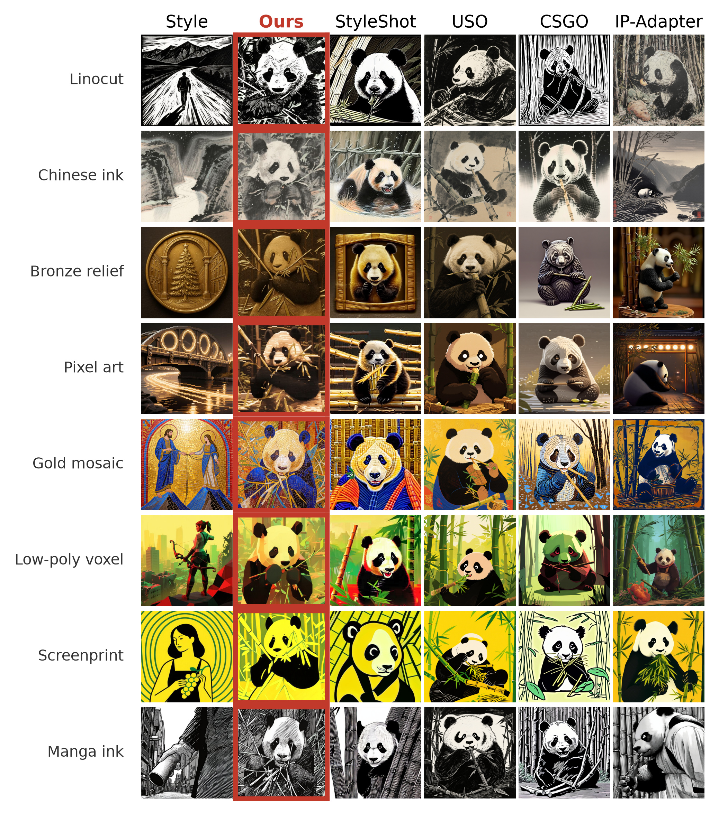
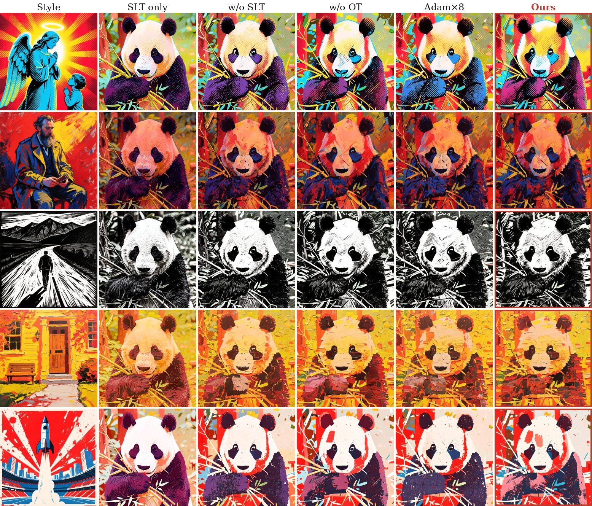
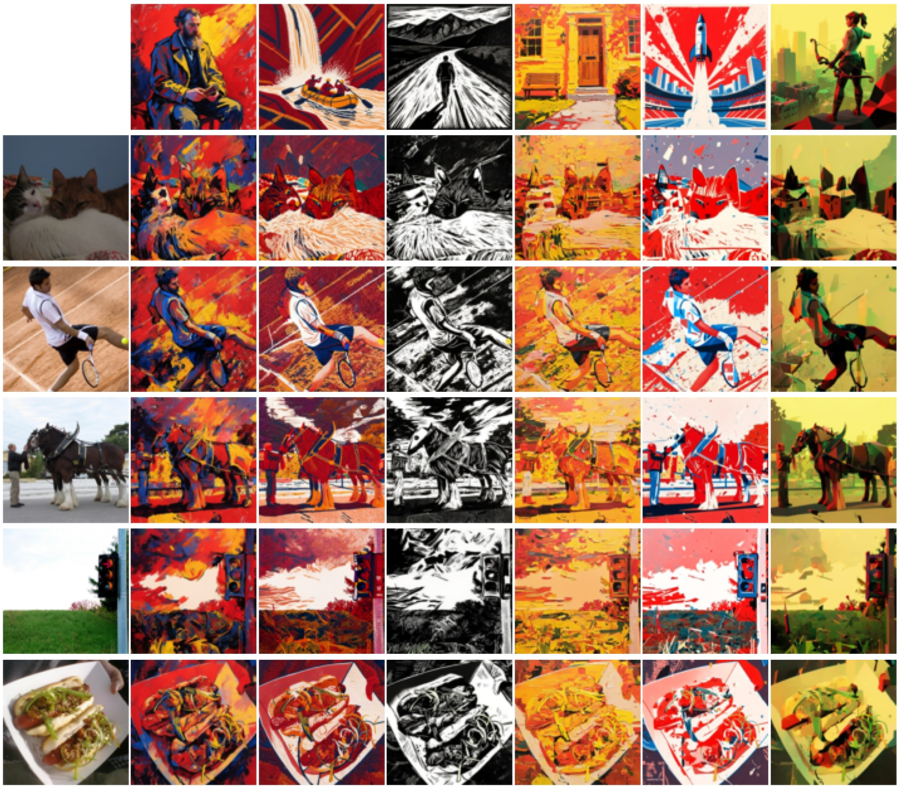
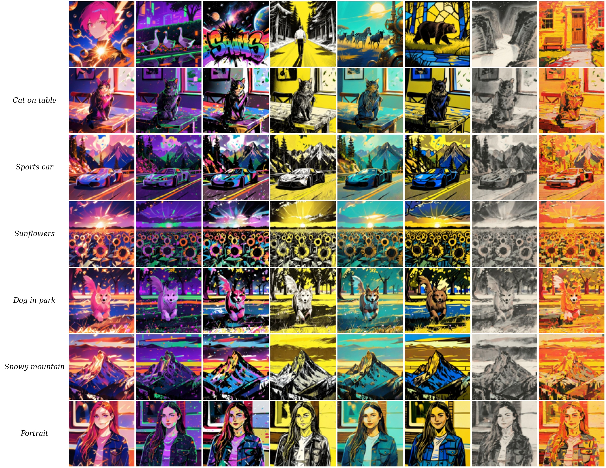
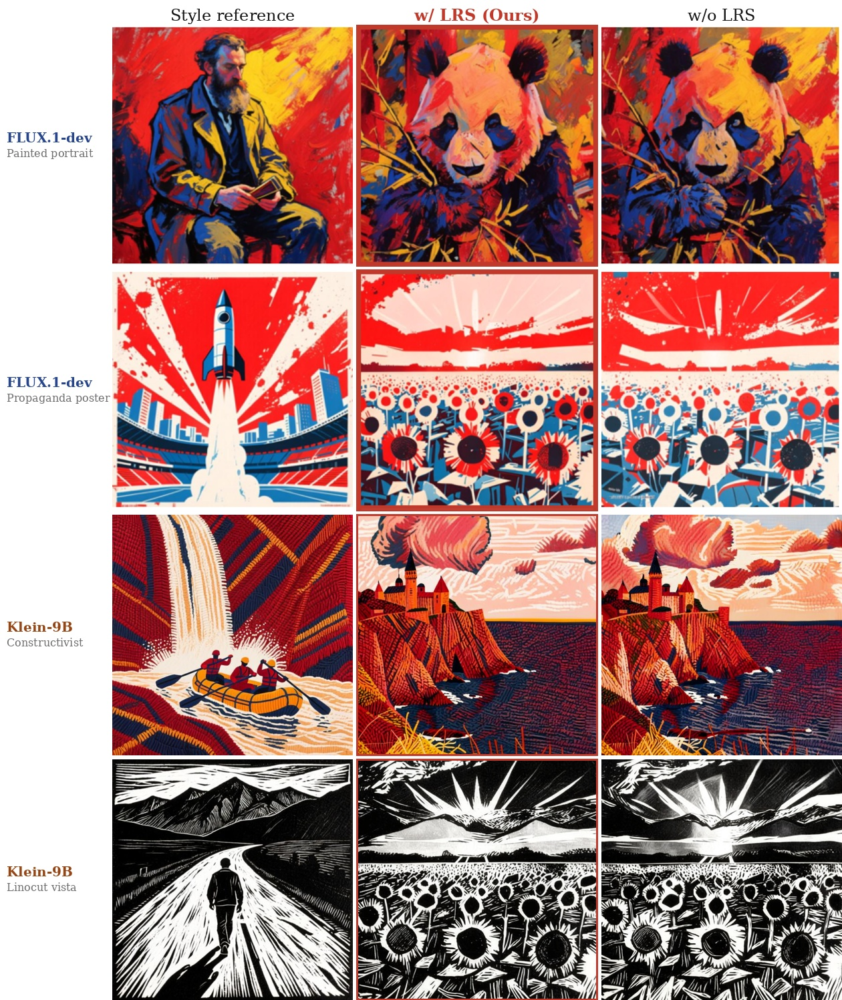
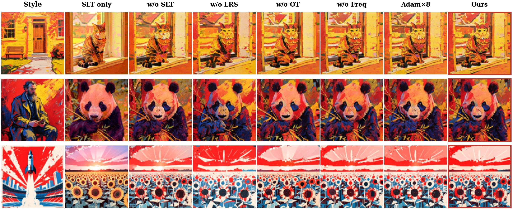
Training-free style transfer on Multimodal Diffusion Transformers (MM-DiT) remains challenging due to the persistent gap between trained adapters and injection-based training-free methods. Existing training-free methods typically perform forward feature injection, and thus struggle to reproduce the rich painterly textures achieved by trained adapters, often leading to only faint hue shifts.
In this paper, we trace this limitation to the absence of backpropagation-induced spatial coupling and propose Hyperion, a fully training-free style-transfer pipeline for MM-DiT. At the optimization level, the pipeline introduces Adam-in-loop, which iteratively optimizes the diffusion latent at each denoising step with a frozen MM-DiT. This process recovers the gradient-driven coupling effect produced through the self-attention value path, where neighboring tokens receive highly similar updates and form coherent brushstroke textures. At the distribution level, the pipeline introduces Sinkhorn Latent Transport (SLT), a single closed-form optimal-transport step that pre-aligns latent color distributions before Adam optimization, improving the operational efficiency of Adam-in-loop.
To further enhance stylization quality, we develop a frequency-domain Sinkhorn loss to sharpen painterly textures and a layout-residual-suppression (LRS) step to eliminate layout interference. The pipeline seamlessly extends to image-to-image stylization. Extensive experiments on a 39-style × 6-prompt benchmark (234 pairs) demonstrate that Hyperion achieves CSD = 0.640 and CLIP-T = 0.296, improving CSD by +5.2% over Adam-8 at 2.5× lower forward-pass cost and by +16.6% over Adam-only under an equal compute budget. Notably, Hyperion outperforms four pre-trained style adapters on 19 of 21 diverse style families.
Recovers spatial coupling (ρ = 0.64) via backpropagation through frozen MM-DiT self-attention value paths, generating genuine painterly brushstrokes without training adapters.
A closed-form optimal transport pre-alignment via OT-AdaIN (≈0.1 ms, 0 forward passes) that aligns latent color and statistics, preventing gradient budget waste.
Decomposes self-attention queries/keys into high/low frequencies to amplify texture energy (γhi = 2.0), while LRS suppresses reference layout leakage.
234 benchmark evaluation pairs and open-sourced evaluation metrics: Style-Texture Match (STM), Style-Content Harmonic (SCH), Texture Energy, and Orientation Coherence.
Hyperion freezes all transformer parameters and operates directly in the diffusion latent space. By orchestrating distribution-level optimal transport (SLT) and optimization-level gradient coupling (Adam-in-loop), Hyperion closes the training gap with zero trainable parameters.
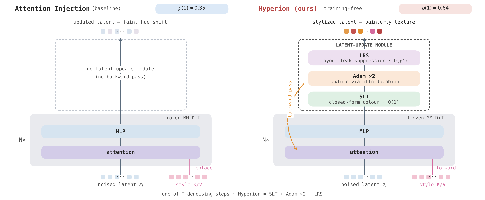
Hyperion framework. (A) Sinkhorn Latent Transport (SLT) computes a token-level optimal transport plan between target and style latents, pre-aligning color and distribution statistics in 0.1 ms with 0 forward passes. (B) Adam-in-loop executes backpropagation through frozen MM-DiT self-attention layers to recover gradient spatial coupling. (C) Frequency-Domain Sinkhorn Loss amplifies high-frequency texture details. (D) Layout Residual Suppression (LRS) progressively suppresses reference spatial layouts across transformer depth.
Before starting backpropagation, SLT computes a high-frequency residual cosine similarity matrix \(\tilde{S}_{ij} = \cos(\tilde{z}_t[i], \tilde{z}_s[j])\) and solves an entropic optimal transport plan \(T = \mathrm{Sinkhorn}(\tilde{S}/\tau)\). Per-token statistics are transferred via OT-AdaIN:
Forward-injection methods fail because they bypass the Jacobian matrix. When propagating style loss gradients \(\nabla_{z_t} \mathcal{L}_{\mathrm{sty}}\) back through frozen self-attention blocks, the value-path gradient naturally couples neighboring spatial tokens:
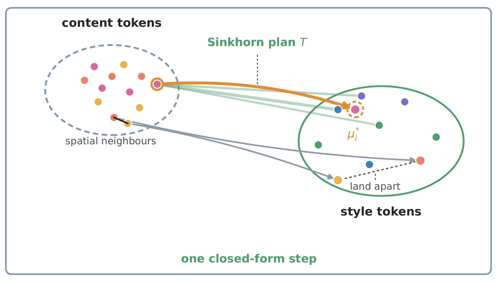
Entropic Sinkhorn mapping aligns latent manifolds instantly, providing an ideal starting point for latent optimization.
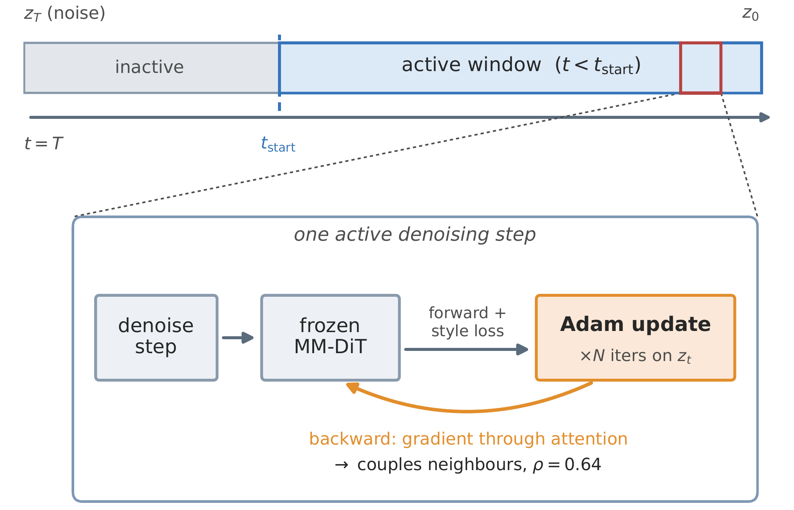
In-loop backpropagation couples self-attention value tokens, turning smooth gradients into structured painterly impasto.
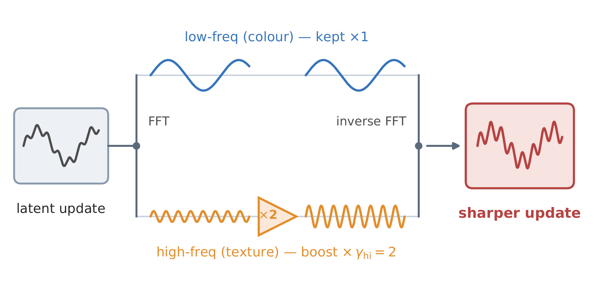
Decomposing attention queries into high and low bands prevents texture oversmoothing and preserves crisp lines.
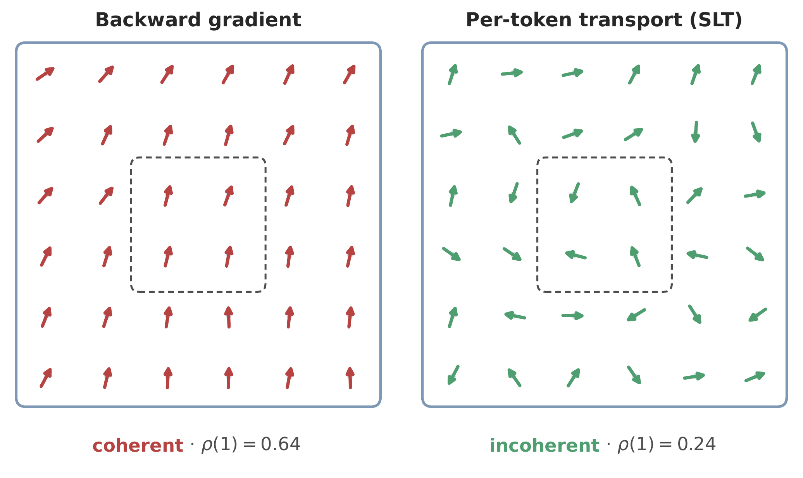
Depth-wise attenuation prevents style key/value layouts from corrupting content geometry and composition.
Evaluated on our comprehensive 39-style × 6-prompt benchmark (234 pairs), as well as 40-pair I2I benchmark against CSGO, USO, IP-Adapter, and Qwen-Image-Edit.
| Method | CSD ↑ | CLIP-T ↑ | STM ↑ | Fwd. / Step |
|---|---|---|---|---|
| Text-only Baseline | -0.010 | 0.315 | 0.350 | 1 |
| Forward Injection | 0.039 | 0.314 | 0.395 | 2 |
| Adam-8 (no SLT) | 0.608 | 0.279 | 0.726 | 10 |
| SLT only (no Adam) | 0.298 | 0.309 | 0.624 | 2 |
| Hyperion (Ours, N=2) | 0.640 | 0.296 | 0.775 | 4 |
| Method | CSD ↑ | CLIP-I ↑ | LPIPS ↓ | FID ↓ | ArtFID ↓ | SCH ↑ | STM ↑ |
|---|---|---|---|---|---|---|---|
| CSGO (SDXL) | 0.557 | 0.689 | 0.656 | 15.1 | 26.7 | 0.619 | 0.363 |
| USO (FLUX) | 0.510 | 0.766 | 0.666 | 8.9 | 16.5 | 0.625 | 0.263 |
| IP-Adapter (FLUX) | 0.160 | 0.623 | 0.558 | 17.0 | 28.0 | 0.316 | 0.465 |
| Qwen-Image-Edit | 0.343 | 0.708 | 0.663 | 7.5 | 14.1 | 0.493 | 0.405 |
| Hyperion (Ours) | 0.712 | 0.660 | 0.696 | 5.4 | 10.9 | 0.686 | 0.716 |
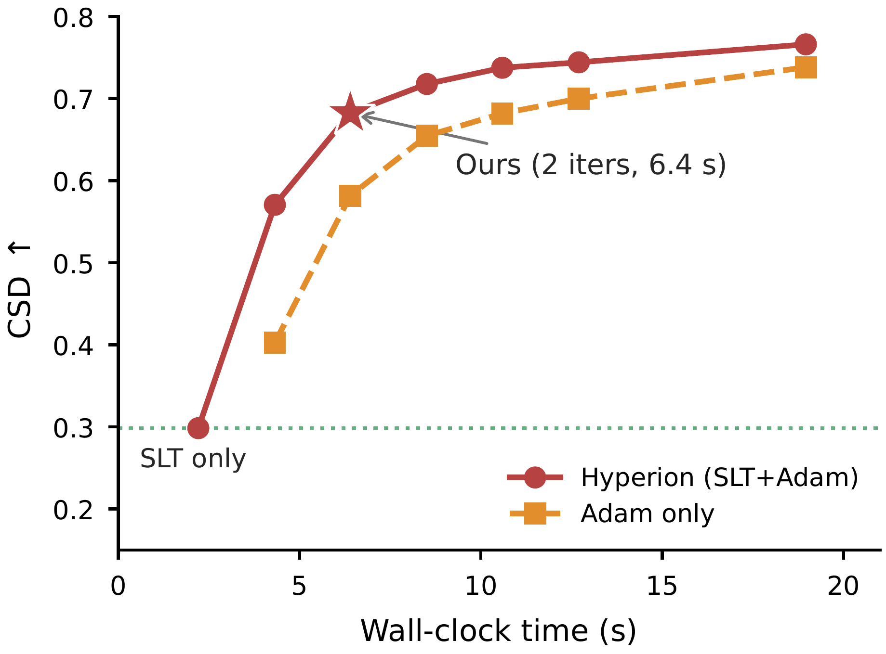
Style vs. Content Pareto Frontier. Hyperion pushes the Pareto boundary further than prior methods, delivering superior style fidelity with strong content fidelity.
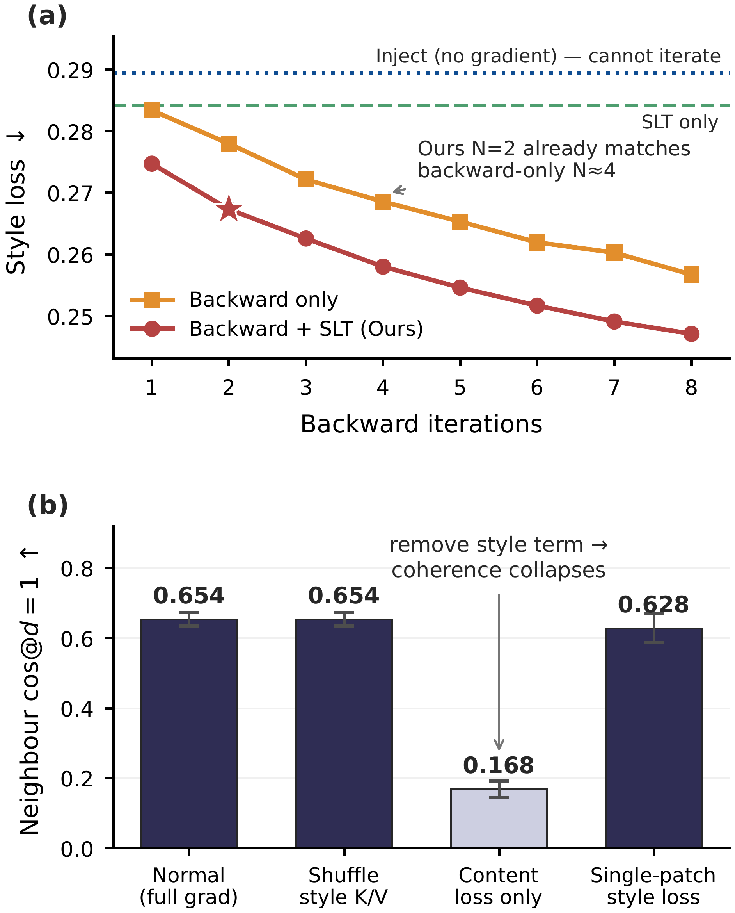
Spatial Neighbor Gradient Coupling ρ(d). Empirical proof of the value-path mechanism: Adam-in-loop achieves ρ = 0.64, sustaining spatial coherence over multiple tokens.
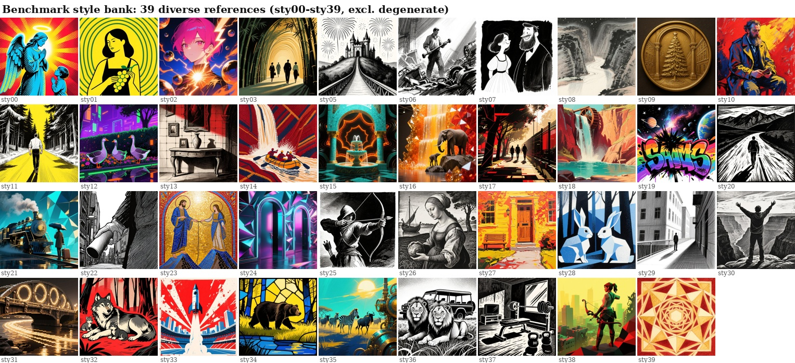
Hyperion contributes a principled metric suite to the community for evaluating fine-grained texture fidelity, streamline coherence, and layout leakage.
Pearson correlation between mean-centered orientation histograms of high-pass residuals. Tracks CSD at r = +0.98, discriminating brushstroke alignment.
Harmonic mean \(\sqrt{\mathrm{CSD} \cdot \mathrm{CLIP\text{-}I}}\) evaluating the joint trade-off between style strength and content geometry preservation.
Quantifies high-pass residual absolute magnitude to measure impasto relief and painterly paint thickness.
Structure tensor eigenvalue ratio \(\frac{\lambda_1 - \lambda_2}{\lambda_1 + \lambda_2 + \epsilon}\) measuring directional consistency along brushstroke streamlines.
DINOv2 patch self-similarity correlation diagnosing unwanted semantic and compositional contamination from the reference image.
Neighbor cosine correlation diagnosing spatial gradient coupling across adjacent tokens in the latent update space.
@article{li2026bridging,
title = {Bridging the Training Gap with Hyperion: A Training-Free Style Transfer Method on Diffusion Transformers},
author = {Li, Yi and Li, Chengyan and Fang, Zhirui and Zhang, Junchuan and Wang, Xuan and Huang, Huaibo and Luo, Yan and Guo, Yanqing},
journal = {IEEE Transactions on Pattern Analysis and Machine Intelligence (TPAMI)},
year = {2026}
}